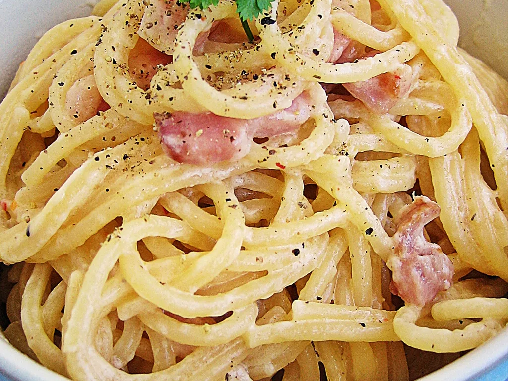
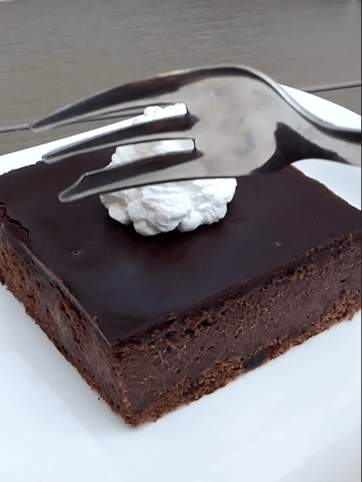
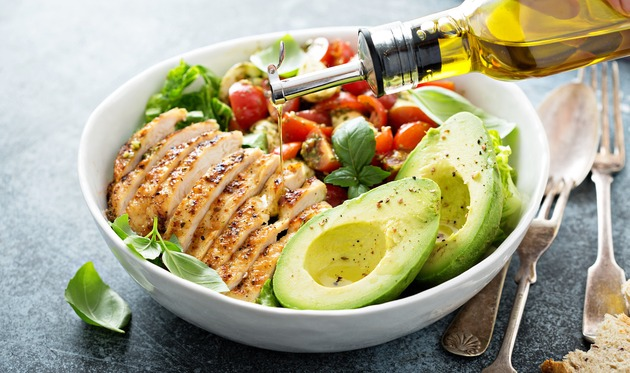
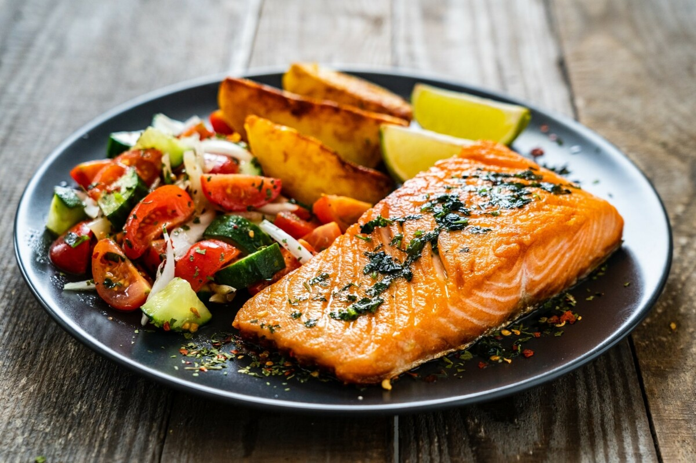

Moji omiljeni recepti
Jednostavna jela koja volim!
Pasta Carbonara

Sastojci:
200g špageta
100g pancete
2 jaja
50g parmezana
Sol i papar po ukusu
Priprema:
Skuhajte špagete u slanoj vodi prema uputstvu na pakiranju.
U tavici propržite pancetu dok ne postane hrskava.
U posebnoj posudi umutite jaja i dodajte naribani parmezan.
Ocjedite špagete i pomješajte ih sa pancetom.
Skinite tavicu sa vatre i brzo umejšajte smjesu od jaja i parmezana kako bi se sos zgusnuo.
Začinite solju i paprom po ukusu i poslužite odmah.
Čokoladni kolač

Sastojci:
200g tamne čokolade
150g maslaca
150g šećera
3 jaja
100g brašna
1 kašičica praška za pecivo
Priprema:
Rastopite čokoladu i maslac na pari.
Umutite jaja sa šećerom dok ne postanu pjenasta.
Dodajte rastopljenu čokoladu u smjesu od jaja i dobro promješajte.
U drugoj posudi pomješajte brašno i prašak za pecivo, pa dodajte u tečnu smjesu.
Sve dobro sjedinite i sipajte u podmazan kalup za pečenje.
Pecite u prethodno zagrijanoj rerni na 180°C oko 25-30 minuta.
Ostavite da se ohladi prije serviranja.
Salata od avokada i piletine

Sastojci:
2 zrela avokada
200g pečene piletine
1 crveni luk
1 limun (sok)
Maslinovo ulje
Sol i papar po ukusu
Priprema:
Isjecite avokado na kockice i stavite u veliku posudu.
Dodajte isjeckanu pečenu piletinu.
Dodajte sitno isjeckani crveni luk.
Prelijte sokom od limuna i maslinovim uljem.
Začinite solju i paprom po ukusu i sve dobro promješajte.
Poslužite odmah ili ostavite u hladnjaku da se ohladi prije serviranja.
Pečeni losos sa povrćem

Sastojci:
2 fileta lososa
1 tikvica
1 crvena paprika
1 crveni luk
Maslinovo ulje
Sol, papar i začinsko bilje po ukusu
Priprema:
Rernu zagrijte na 200°C.
Isjecite tikvicu, papriku i crveni luk na veće komade.
U pleh stavite povrće, začinite solju, paprom i začinskim biljem, pa prelijte maslinovim uljem.
Pored povrća stavite filete lososa, začinite ih i njih maslinovim uljem.
Pecite u rerni oko 20-25 minuta dok losos ne postane mekan i povrće pečeno.
Poslužite toplo uz omiljeni prilog.